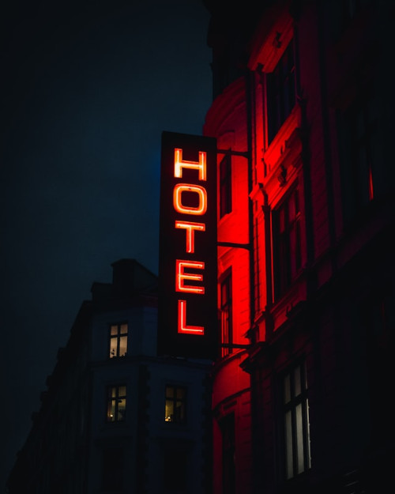

Onde ficamos

Uma das coisas mais importantes (no nosso caso), é o lugar onde paramos para descansar entre um dia e outro. Após rodar por horas e vários km, tudo que você quer é um bom banho e uma boa cama. É essencial um bom descanso, já que houve vezes em que chegamos a rodar cerca de 700 km no dia em 12 horas e no outro dia, acordar ás 5 da manhã para pegar novamente a estrada.
Então se eu pudesse dar só uma dica: durma bem!
O booking é um bom aliado na escolha de hotéis, assim conseguimos boas estadias por preços razoáveis e com segurança. Geralmente saímos para jantar a pé, sempre que possível e temos que deixar praticamente tudo na hospedagem, daí a importância de ficar em um local seguro.